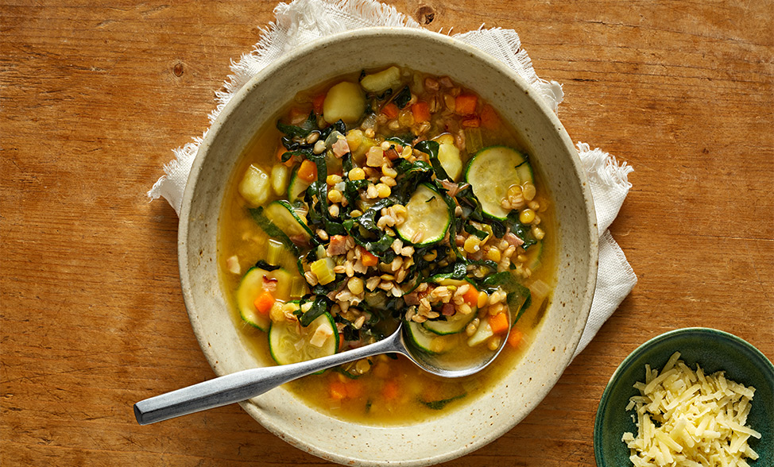

Classic Chocolate Chip Cookies

Enjoy the classic taste of homemade cookies!
Ingredients:
- 1 cup (2 sticks) softened butter
- 3/4 cup granulated sugar
- 3/4 cup packed brown sugar
- 1 tsp vanilla extract
- 2 large eggs
- 2 1/4 cups all-purpose flour
- 1 tsp baking soda
- 1/2 tsp salt
- 2 cups chocolate chips
Instructions:
- Preheat oven to 375°F (190°C)
- Cream butter, sugars, and vanilla until fluffy
- Beat in eggs
- Mix flour, baking soda, salt in another bowl
- Combine dry mix with wet mix
- Stir in chocolate chips
- Drop tablespoons of dough onto baking sheets
- Bake 9-11 mins until edges are golden
- Cool briefly on sheets, then racks
- Enjoy the classic taste of homemade cookies!
Homemade Pizza

Slice the pizza and enjoy your delicious homemade creation!
Ingredients:
- 2 1/4 cups all-purpose flour
- 1 packet (2 1/4 tsp) active dry yeast
- 1 cup warm water
- 1 tsp sugar
- 1 tsp salt
- 2 tbsp olive oil
- 1 cup pizza sauce
- 2 cups shredded mozzarella cheese
- Your choice of toppings (pepperoni, mushrooms, bell peppers, onions, etc.)
- Dried oregano and red pepper flakes (optional)
For the Dough:
For the Toppings:
Instructions:
- In a bowl, mix warm water and sugar until sugar dissolves.
- Sprinkle yeast over the mixture, let it sit for 5-10 minutes until it's foamy.
- Stir in salt and olive oil.
- Gradually add flour, kneading until you have a smooth dough.
- Cover the dough and let it rise for about 1 hour or until it doubles in size.
Hearty Vegetable Soup:

Enjoy Your Hearty Vegetable Soup. This hearty vegetable soup is a great way to enjoy a variety of vegetables in a flavorful and satisfying dish.
Ingredients:
- 2 tablespoons olive oil
- 1 onion, chopped
- 2 carrots, peeled and diced
- 2 celery stalks, diced
- 2 garlic cloves, minced
- 1 teaspoon dried thyme
- 1 teaspoon dried oregano
- 1 can (14 oz) diced tomatoes
- 6 cups vegetable broth
- 2 cups diced potatoes
- 2 cups chopped mixed vegetables (e.g., zucchini, green beans, corn)
- Salt and pepper to taste
- 1 cup cooked pasta or rice (optional)
- Chopped fresh parsley for garnish
Instructions:
- Heat olive oil in a pot. Sauté chopped onion, diced carrots, and diced celery for 5 mins.
- Add minced garlic, dried thyme, dried oregano. Sauté for 1 min.
- Put diced tomatoes, vegetable broth in the pot. Bring to a simmer.
- Add diced potatoes. Simmer 10 mins until partially cooked.
- Stir in mixed vegetables (zucchini, green beans, corn). Simmer 10-15 mins until tender.
- Season with salt, pepper. Add cooked pasta/rice if desired.
- Taste and adjust seasoning. Add more broth for desired thickness.
- Ladle into bowls, garnish with fresh parsley.
- Serve hot and enjoy a hearty vegetable-packed meal!